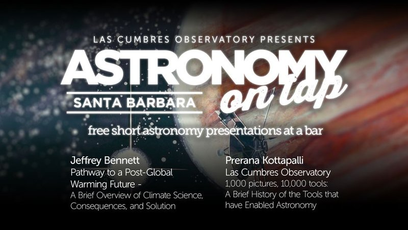
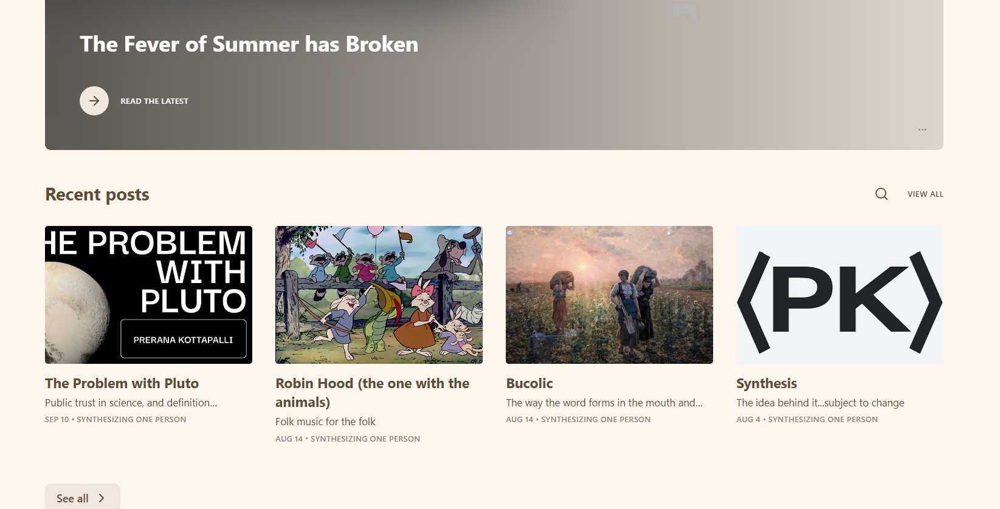

GitHub/git for the anxious amateur
Workshop developed by me for instruction and pair work, adapted from the software carpentry and Atlassian git tutorials


Astronomy on Tap Talks
I have given two Astronomy on Tap (AoT) talks.
The first, was given at UC Santa Barbara in October 2022, titled "1,000 Tools: 10,000 tools", giving a brief history of the tools that enabled astronomy.
The second talk was given at the AoT Gainesville in September 2025, titled "The Problem with Pluto",
about the problem with definitions in astronomy, and how it affects the science we conduct. This talk is available on YouTube and a writeup of the same name is available
on my substack: The Problem with Pluto.

Welcome to Synthesis
Synthesizing every thought I’ve ever had, in my words. I may reference other people’s thoughts and ideas or written work, but the crux of it is to present my perception and understanding of it.
